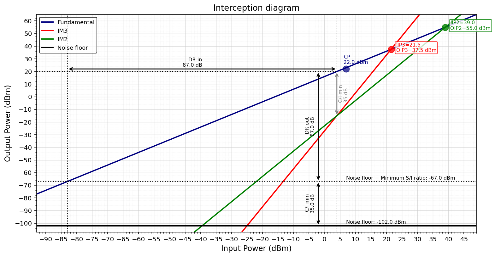

Intercept Diagram
Introduction
The intercept diagram is a tool to evaluate rapidly the dynamic range of a system using information from the two-tone test and NF data.
The following data is needed:
Data
Description
\(G\)
Linear gain (dB)
\(NF\)
Noise figure of the systems (dB)
\(BW\)
Channel bandwidth (Hz)
\(P_{out}\)
Power of the carriers in the two tone test (dBm)
\(\Delta_2\)
Power difference between fundamental and IM2 product (dB)
\(\Delta_3\)
Power difference between fundamental and IM3 product (dB)
\(OP_{1dB}\)
Output power at which the actual gain deviates from the linear gain (dBm)
\(SI_{min}\)
Minimum signal-to-interference (or signal-to-noise) ratio required for the system to work (dB)
Here you can find the equations as a Jupyter Notebook and also as a raw Python script
Noise floor
The first step is to determine the noise floor of the system, which depends on the Noise Figure and the channel bandwidth
Thermal Noise
Any resistive element at a physical temperature \(T\) generates thermal noise. The available noise power over a bandwidth \(B\) is:
At room temperature (T = 290 K}) over 1 Hz, this evaluates to the well-known noise floor of -174 dBm/Hz.
Noise Figure
A real receiver adds noise beyond the thermal floor. The noise figure quantifies this degradation as the difference in SNR between input and output:
Its linear equivalent, the noise factor \(F\), is:
Total Noise Floor
The total noise power at the output, referred to the input, is_
Variables
Symbol
Description
\(k\)
Boltzmann constant (\(1.381 \times 10^{-23}\) J/K)
\(T\)
System temperature (K)
\(B\)
Noise bandwidth (Hz)
\(F\)
Noise factor (linear)
\(\text{NF}\)
Noise figure (dB)
\(N_{thermal}\)
Thermal noise power at input, \(kTB\) (W)
\(N_{total}\)
Total noise power referred to input, \(F{\cdot}kTB\) (W)
Intercept Point (IPn) Calculations
Two-Tone Test
The intermodulation distortion is often characterized using the intercept points, mainly for the third order. In broadband systems, the second order intermodulation products lie inside the band, the second order intercept point is also needed.
The incercept point is defined as the hypothetical power level at which the fundamental and the intermodulation (IM) product would intersect if extrapolated linearly. Both IP3 and IP2 can be calculated from the two-tone test.
Second Order Intercept Point (IP2)
The second-order IM product grows 2 dB for every 1 dB increase in input power. Measured with a two-tone test by observing the power difference \(\Delta_2\) between the fundamental and the IM2 product:
Third Order Intercept Point (IP3)
The third order IM product grows 3 dB for every 1 dB increase in input power. Measured with a two-tone test by observing the power difference \(\Delta_3\) between the fundamental and the IM3 product:
General Order — IPn
For an IM product of order \(n\), the input and output intercept points are:
The output power of the \(n\)-th order IM product as a function of input power is:
The IM product grows \(n\) dB for every 1 dB increase in input power.
Output Dynamic Range
Upper Limit
The upper limit is determined by the linearity of the amplifier. It is the output power at which the intermodulation products rise above the minimum C/I.
Third order (IMD3):
Setting \(P_{out} - P_{out,\,IM3} = CI_{min}\):
Second order (IMD2):
Setting \(P_{out} - P_{out,\,IM2} = CI_{min}\):
Note that for IMD2 the upper limit degrades twice as fast with \(CI_{min}\) compared to IMD3.
Lower Limit
The lower limit is the output power at which the carrier drops below the noise floor by the minimum SNR required for the system:
where \(N_{out}\) is the output noise power:
Output Dynamic Range
Input Dynamic Range
The input dynamic range is the range of input power levels over which the system operates correctly — above the sensitivity and below the level at which intermodulation products exceed the minimum C/I.
Lower Limit — Sensitivity
The lower limit is the minimum detectable input signal (sensitivity), defined as the input-referred noise floor plus the minimum SNR required:
where \(kTB\) is the thermal noise power at the input:
Upper Limit
The upper limit is the input power at which the intermodulation products rise above the minimum C/I. Referred to the input from the output upper limit (assuming no compression):
Input Dynamic Range
Combining both limits:
Note that without compression \(DR_{in} = DR_{out}\), since the gain \(G\) cancels out in both limits — a useful sanity check.
Variables
Symbol
Description
\(S\)
Sensitivity — minimum detectable input power (dBm)
\(kTB\)
Thermal noise power at the input (dBm)
\(NF\)
Noise figure (dB)
\(SNR_{min}\)
Minimum signal-to-noise ratio required (dB)
\(CI_{min}\)
Minimum carrier-to-interference ratio required (dB)
\(IIPn\)
Input intercept point of order \(n\) (dBm)
\(G\)
System gain (dB)
\(n\)
Order of the intermodulation product
Python Script
You can use the following script to calculate the intercept diagram:
import numpy as np
import matplotlib.pyplot as plt
import matplotlib.ticker as ticker
###############################################################################
# INPUT PARAMETERS
###############################################################################
system_name = "RF Amplifier"
G = 16 # [dB] System gain
Pout = 20 # [dBm] Carrier level at which IMD3 and IMD2 is measured
Delta3 = 35 # [dB] Difference between the carrier level at the output and the IM3 product
Delta2 = 35 # [dB] Difference between the carrier level at the output and the IM2 product
CPo = 22 # [dBm] 1 dB Compression point at the output
SImin = 35 # [dB] Minimum S/I acceptable for the system
# Equations
def IIP(P_out, G, Delta, n):
return (P_out - G) + Delta/(n-1) # RF Design Guide. Vizmuller. pg. 36
def PoutIMN(P_in, n, G, IIPN):
return n*P_in - (n-1)*IIPN + G
# Force white background in plots
plt.rcParams.update({
'axes.facecolor': 'white',
'figure.facecolor': 'white',
'axes.edgecolor': 'black',
'axes.labelcolor': 'black',
'xtick.color': 'black',
'ytick.color': 'black',
'text.color': 'black',
'grid.color': '#cccccc',
'legend.facecolor': 'white',
'legend.edgecolor': 'black',
})
# ─── NOISE POWER CALCULATION ─────────────────────────────────────────────────
# System parameters
NF = 2 # [dB] - Noise figure
BW = 10e6 # [Hz] - Channel Bandwidth
T = 290 # [K] - System temperature
# Constants
k = 1.380649e-23 # [J/K] - Boltzmann constant
N_thermal_W = k * T * BW # [W]
N_thermal_dBm = 10 * np.log10(N_thermal_W) + 30 # [dBm]
# Noise figure as linear factor
F = 10 ** (NF / 10) # linear (noise factor)
# Total noise power at output referred to input
N_total_W = F * k * T * BW # [W]
N_total_dBm = 10 * np.log10(N_total_W) + 30 # [dBm]
# ─── LINEARITY CALCULATIONS ──────────────────────────────────────────────────
# ─── IP2 CALCULATION ─────────────────────────────────────────────────
IIP2 = IIP(P_out=Pout, G=G, Delta=Delta2, n=2)
OIP2 = IIP2 + G;
# ─── IP3 CALCULATION ─────────────────────────────────────────────────
IIP3 = IIP(P_out=Pout, G=G, Delta=Delta3, n=3)
OIP3 = IIP3 + G;
# ─── Compression point ─────────────────────────────────────────────────
CPi = CPo - (G-1)
# ─── Output Dynamic Range ────────────────────────────────────────────────────
# Upper limit — input power at which IMDn rises above SImin
## Check IMD2 limit
Pin_Upper_Limit_IMD2 = IIP2 - SImin
Pout_Upper_Limit_IMD2 = Pin_Upper_Limit_IMD2 + G
## Check IMD3 limit
Pin_Upper_Limit_IMD3 = IIP3 - SImin / 2
Pout_Upper_Limit_IMD3 = Pin_Upper_Limit_IMD3 + G
if (Pout_Upper_Limit_IMD3 < Pout_Upper_Limit_IMD2):
# IMD3 is worse than IMD2
Pout_Upper_Limit = Pout_Upper_Limit_IMD3
Pin_Upper_Limit = Pin_Upper_Limit_IMD3
else:
# IMD2 is worse than IMD3
Pout_Upper_Limit = Pout_Upper_Limit_IMD2
Pin_Upper_Limit = Pin_Upper_Limit_IMD2
# Lower limit — output noise floor + minimum SNR
Pout_Lower_Limit = N_total_dBm + SImin
Pin_Lower_Limit = Pout_Lower_Limit - G
# Dynamic range (referred to output)
DR_out = Pout_Upper_Limit - Pout_Lower_Limit
# ─── INPUT DYNAMIC RANGE ──────────────────────────────────────────────────────
# Upper limit — output upper limit referred back to input (no compression assumed)
Pin_Upper_Limit = Pout_Upper_Limit - G # same as IIPn - SImin/(n-1)
# Lower limit — sensitivity: minimum detectable signal at the input
# Sensitivity = kTB + NF + SNR_min
Sensitivity = N_total_dBm - G + SImin # referred to input (N_total_dBm is at output)
# Input dynamic range
DR_in = Pin_Upper_Limit - Sensitivity
# ─── NOISE RESULTS ──────────────────────────────────────────────────────────
linewidth = 100
print("─" * 42, "NOISE RESULTS", "─" * 42)
print(f" Temperature : {T} K")
print(f" Bandwidth : {BW/1e6:.1f} MHz")
print(f" Noise Figure : {NF} dB")
print(f" kTB (thermal) : {N_thermal_W:.3e} W | {N_thermal_dBm:.2f} dBm")
print(f" N_total (F·kTB) : {N_total_W:.3e} W | {N_total_dBm:.2f} dBm")
# ─── LINEARITY RESULTS ───────────────────────────────────────────────────────
linewidth = 100
print("─" * 41, "LINEARITY RESULTS", "─" * 41)
print(f" Output P1dB : {CPo:.1f} dBm")
print(f" Input P1dB : {CPi:.1f} dBm")
print("─" * linewidth)
print(f" Input IP2 : {IIP2:.1f} dBm")
print(f" Output IP2 : {OIP2:.1f} dBm")
print("─" * linewidth)
print(f" Input IP3 : {IIP3:.1f} dBm")
print(f" Output IP3 : {OIP3:.1f} dBm")
print("─" * linewidth)
# ─── OUTPUT DYNAMIC RANGE ────────────────────────────────────────────────────
print("─" * 41, "OUTPUT DYNAMIC RANGE", "─" * 41)
print("─" * linewidth)
print(f" Upper limit (Pin) : {Pin_Upper_Limit:.2f} dBm")
print(f" Upper limit (Pout) : {Pout_Upper_Limit:.2f} dBm")
print(f" Lower limit (Pout) : {Pout_Lower_Limit:.2f} dBm")
print(f" Output Dynamic Range : {DR_out:.2f} dB")
print("─" * linewidth)
# ─── INPUT DYNAMIC RANGE ─────────────────────────────────────────────────────
print("─" * linewidth)
print(" Input Dynamic Range")
print("─" * linewidth)
print(f" Upper limit (Pin) : {Pin_Upper_Limit:.2f} dBm")
print(f" Sensitivity (Pin) : {Sensitivity:.2f} dBm")
print(f" Input Dynamic Range : {DR_in:.2f} dB")
print("─" * linewidth)
# Plot intercept diagram
plt.close('all')
title = "Interception diagram"
# ─── AXIS DIVISIONS ──────────────────────────────────────────────────────────
x_step = 5 # dB — x-axis major grid step
y_step = 10 # dB — y-axis major grid step
# Plot range
xmin = Pin_Lower_Limit - 10
xmax = max(IIP3, IIP2) + 10
ymin = N_total_dBm - 5
ymax = max(OIP3, OIP2) + 10
# Calculations
P_in = np.linspace(xmin, xmax, 100)
fundamental = P_in + G
IM3 = PoutIMN(P_in, 3, G, IIP3)
IM2 = PoutIMN(P_in, 2, G, IIP2)
fig, ax = plt.subplots(figsize=(11, 6))
# ─── TRACES ──────────────────────────────────────────────────────────────────
ax.plot(P_in, fundamental, lw=2, color='navy', label='Fundamental')
ax.plot(P_in, IM3, lw=2, color='red', label='IM3')
ax.plot(P_in, IM2, lw=2, color='green', label='IM2')
ax.axhline(N_total_dBm, lw=2, color='black', label='Noise floor')
# Operating level dotted line up to Pin_Upper_Limit
level_x = np.linspace(xmin, Pin_Upper_Limit, 100)
ax.plot(level_x, np.full_like(level_x, Pout_Upper_Limit),
lw=1.5, color='black', ls='dotted')
# ─── KEY POINTS ──────────────────────────────────────────────────────────────
ax.plot(IIP3, OIP3, 'o', ms=10, color='red', alpha=0.8, zorder=5)
ax.plot(IIP2, OIP2, 'o', ms=10, color='green', alpha=0.8, zorder=5)
ax.plot(CPi, CPo, 'o', ms=10, color='navy', alpha=0.7, zorder=5)
# ─── POINT LABELS ────────────────────────────────────────────────────────────
ax.annotate(f'IIP3={IIP3:.1f}\nOIP3={OIP3:.1f} dBm',
xy=(IIP3, OIP3), xytext=(8, -4),
textcoords='offset points', fontsize=8, color='red',
bbox=dict(boxstyle='round,pad=0.2', fc='white', ec='red', alpha=0.8))
ax.annotate(f'IIP2={IIP2:.1f}\nOIP2={OIP2:.1f} dBm',
xy=(IIP2, OIP2), xytext=(8, -4),
textcoords='offset points', fontsize=8, color='green',
bbox=dict(boxstyle='round,pad=0.2', fc='white', ec='green', alpha=0.8))
ax.annotate(f'CP\n{CPo:.1f} dBm',
xy=(CPi, CPo), xytext=(-4, 8),
textcoords='offset points', fontsize=8, color='navy')
# ─── NOISE FLOOR LABEL ───────────────────────────────────────────────────────
ax.text(CPi, N_total_dBm + 0.8,
f'Noise floor: {N_total_dBm:.1f} dBm',
fontsize=8, color='black', va='bottom')
# ─── NOISE FLOOR + MINIMUM S/I LABEL ───────────────────────────────────────────────────────
ax.text(CPi, N_total_dBm + SImin + 0.8,
f'Noise floor + Minimum S/I ratio: {N_total_dBm+SImin:.1f} dBm',
fontsize=8, color='black', va='bottom')
# ─── OUTPUT DYNAMIC RANGE ARROW ──────────────────────────────────────────────
shift_out = 6
ax.annotate('',
xy =(Pin_Upper_Limit - shift_out, Pout_Upper_Limit),
xytext=(Pin_Upper_Limit - shift_out, Pout_Lower_Limit),
arrowprops=dict(arrowstyle='<->', color='black', lw=1.5))
ax.text(Pin_Upper_Limit - shift_out - 1,
(Pout_Upper_Limit + Pout_Lower_Limit) / 2,
f'DR out\n{DR_out:.1f} dB',
ha='right', va='center', fontsize=8, rotation=90)
# ─── SENSITIVITY / C/I MIN ARROW ─────────────────────────────────────────────
ax.axhline(N_total_dBm + SImin, lw=1, ls='dotted', color='black')
ax.annotate('',
xy =(Pin_Upper_Limit - shift_out, N_total_dBm),
xytext=(Pin_Upper_Limit - shift_out, Pout_Lower_Limit),
arrowprops=dict(arrowstyle='<->', color='black', lw=1.5))
ax.text(Pin_Upper_Limit - shift_out - 1,
(Pout_Lower_Limit + N_total_dBm) / 2,
f'C/I min\n{SImin:.1f} dB',
ha='right', va='center', fontsize=8, rotation=90)
# ─── C/I MIN ARROW ───────────────────────────────────────────────────────────
ax.annotate('',
xy =(Pin_Upper_Limit, Pout_Upper_Limit),
xytext=(Pin_Upper_Limit, Pout_Upper_Limit - SImin),
arrowprops=dict(arrowstyle='<->', color='gray', lw=1.5))
ax.text(Pin_Upper_Limit + 0.5,
Pout_Upper_Limit - SImin / 2,
f'C/I min\n{SImin} dB',
ha='left', va='center', fontsize=8, color='gray', rotation=90)
# ─── INPUT DYNAMIC RANGE ─────────────────────────────────────────────────────
ax.axvline(Pin_Lower_Limit, lw=1, ls='dotted', color='black')
ax.axvline(Pin_Upper_Limit, lw=1, ls='dotted', color='black')
ax.annotate('',
xy =(Pin_Lower_Limit, CPo),
xytext=(Pin_Upper_Limit, CPo),
arrowprops=dict(arrowstyle='<->', color='black', lw=1.5))
ax.text(0.5 * (Pin_Lower_Limit + Pin_Upper_Limit), CPo + 5,
f'DR in\n{DR_in:.1f} dB',
ha='right', va='center', fontsize=8)
# ─── AXIS STEPS ──────────────────────────────────────────────────────────────
ax.xaxis.set_major_locator(ticker.MultipleLocator(x_step))
ax.xaxis.set_minor_locator(ticker.MultipleLocator(x_step / 5))
ax.yaxis.set_major_locator(ticker.MultipleLocator(y_step))
ax.yaxis.set_minor_locator(ticker.MultipleLocator(y_step / 5))
# ─── FORMATTING ──────────────────────────────────────────────────────────────
ax.set_xlim(xmin, xmax)
ax.set_ylim(ymin, ymax)
ax.set_xlabel('Input Power (dBm)', fontsize=12)
ax.set_ylabel('Output Power (dBm)', fontsize=12)
ax.set_title(title, fontsize=13)
ax.legend(loc='upper left', fontsize=9)
ax.grid(True, which='major', lw=0.7, alpha=0.7)
ax.grid(True, which='minor', lw=0.3, alpha=0.4, ls=':')
fig.subplots_adjust(left=0.09, right=0.97, top=0.92, bottom=0.12)
plt.show()
You’ll get something like this:
